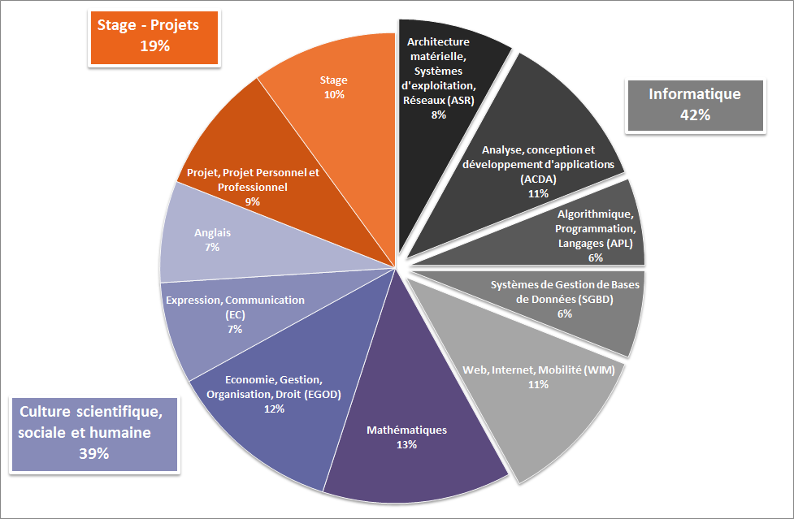

Le Programme du DUT informatique
Comment est organisé le DUT informatique ?
- Le DUT se déroule en 2 ans et ses 2 ans sont divisé en 4 semestres
- Il y a 30 heures de cours par semaine
- Il y a des rpojets tutorés au cours des 4 semestres
- Un stage de fin d'études de 10 semaines
- Il y a la possibilité de continuer les études ou d'entrer dans le milieu professionnel
Répartition des horraires de travail :

Le programme du DUT info vise à améliorer les compétences en informatique des étudiant tout en leur apportant des connaisances de culture générale.
Le programme national :
Programme national du DUT informatique
Notez que ce programme est très similaire aux formations: License Informatique et BTS SIO.
Résultats d'enquête post DUT informatique :